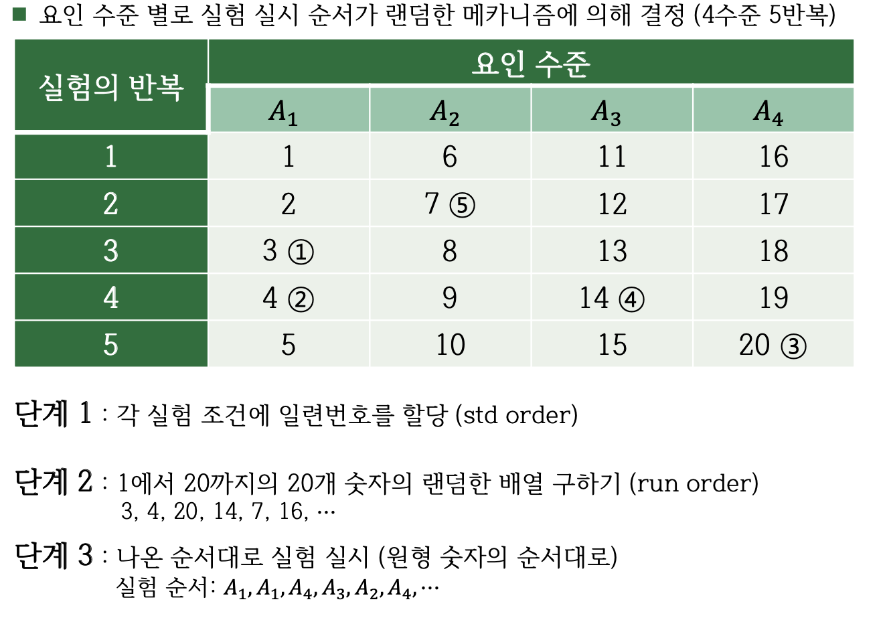
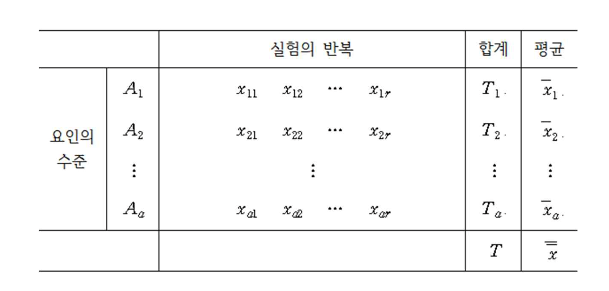

두 집단의 평균 비교
t-검정
기초통계학에서 나오는 가장 기본적이고 자주 쓰이는 가설검정 방법은 두 집단의 평균의 차이를 검정하는 t-검정(t-test)이다.
교과서 2장 예제 2.2 를 다시 보자. 공장의 두 개 라인에서 생산되는 시멘트의 인장강도에 유의한 차이가 있는지 통계적 가설 검정을 수행하려고 한다. 첫 번째 생산라인을 \(1\) , 두 번째 생산라인을 \(2\) 라고 했을 때 각각의 라인에서 시멘트 인장강도의 평균을 \(\mu_1\) , \(\mu_2\) 이라고 하자.
여기서 고려해야할 가설은 다음과 같다.
\[ H_0: \mu_1 = \mu_2 \quad \text{vs.} \quad H_1: \mu_1 \ne \mu_2 \]
두 집단이 분산이 동일한 정규분포 \(N(\mu_1, \sigma^2)\) , \(N(\mu_2, \sigma^2)\) 를 따른다고 가정하고 다음과 같이 각각 \(n_1\) , \(n_2\) 개의 독립 표본을 얻었다고 하자.
\[ y_{11}, y_{12}, \dots, y_{1 n_1} \sim N(\mu_1, \sigma^2), \quad y_{21}, y_{22}, \dots, y_{2 n_2} \sim N(\mu_2, \sigma^2) \]
위의 가설을 다음과 같은 t-통계량을 이용하여 검정할 수 있다.
\[ t_0 =\frac {\bar y_1 -\bar y_2 } { s_p \sqrt{1/n_1 + 1/n_2}} \]
여기서 \(\bar y_1\) , \(\bar y_2\) 은 두 생산라인에서 추출된 표본의 평균을 나타내고 \(n_1\) , \(n_2\) 은 각 집단의 표본 개수를 나타낸다. 또한 \(s_p^2\) 은 두 집단의 공통분산 추정량이며 다음과 같이 계산한다.
\[ \hat \sigma^2 = s_p^2 = \frac { \sum_{i=1}^{n_1} (y_{1i} -\bar y_1)^2 + \sum_{i=1}^{n_2} (y_{2i} -\bar y_2)^2 } { n_1 + n_2 -2} \]
위에서 구한 t-통계량의 절대값이 크다면 귀무가설 \(H_0\) 에 반대되는 증거이다. 유의수준을 \(\alpha\) 라고 했을 때 t-통계량 \(t_0\) 의 절대값이 자유도 \(df=n_1 + n_2 -2\) 를 가지는 t-분포의 상위 \(\alpha/2\) 분위수보다 크면 귀무가설을 기각하고 대립가설 \(H_1\) 을 채택한다.
\[ \text{ Reject } H_0 \quad \text { if } ~~ |t_0| > t(1-\alpha/2, n_1 + n_2 -2 ) \]
가설 검정은 p-값(p-value)을 구하고 그 값이 \(\alpha\) 보다 작으면 귀무가설을 기각하는 방법을 사용할 수 있다.
\[ \text{ Reject } H_0 \quad \text { if p-value } < \alpha \]
여기서 \(p-value\) 는 다음과 같이 계산할 수 있으며 \(t(n_1 + n_1 -2 )\) 는 자유도가 \(n_1 + n_2 -2\) 을 가지는 \(t\) -분포를 따르는 확률변수이다. .
\[ \text {p-value }=2 P[ t(n_1 + n_2 -2 ) >|t_0|] \]
R 에서 함수 t.test를 이용하여 두 집단에 대한 t-검정을 실시해 보자.
<- c (16.9 , 16.4 , 17.2 , 16.4 , 16.5 , 17.0 , 17.0 , 17.2 , 16.6 , 16.6 )<- c (16.6 , 16.8 , 17.4 , 17.1 , 17.0 , 16.9 , 17.3 , 17.0 , 17.1 , 17.3 )<- data.frame (line1, line2)
line1 line2
1 16.9 16.6
2 16.4 16.8
3 17.2 17.4
4 16.4 17.1
5 16.5 17.0
6 17.0 16.9
7 17.0 17.3
8 17.2 17.0
9 16.6 17.1
10 16.6 17.3
<- df220 %>% pivot_longer (cols = everything (), names_to = "line" , values_to = "strength" ) %>% dplyr:: arrange (line)
# A tibble: 20 × 2
line strength
<chr> <dbl>
1 line1 16.9
2 line1 16.4
3 line1 17.2
4 line1 16.4
5 line1 16.5
6 line1 17
7 line1 17
8 line1 17.2
9 line1 16.6
10 line1 16.6
11 line2 16.6
12 line2 16.8
13 line2 17.4
14 line2 17.1
15 line2 17
16 line2 16.9
17 line2 17.3
18 line2 17
19 line2 17.1
20 line2 17.3
t.test (strength~ line, df22, paired = FALSE , var.equal = TRUE , conf.level = 0.95 )
Two Sample t-test
data: strength by line
t = -2.1338, df = 18, p-value = 0.04687
alternative hypothesis: true difference in means between group line1 and group line2 is not equal to 0
95 percent confidence interval:
-0.535840211 -0.004159789
sample estimates:
mean in group line1 mean in group line2
16.78 17.05
유의수준을 0.05로 정하면 t-검정의 결과 p-값이 유의수준 보다 작아서 귀무가설을 기각하고 대립가설 \(H_1\) 을 채택한다. 즉, 두 라인의 시멘트 인장강도 평균은 유의하게 다르다.
t-검정의 재구성
이제 두 집단에 대한 가설 검정을 세 개 이상인 여러 개의 집단으로 확장하는 경우를 생각해보자. 여러 개의 집단에 대한 가설 검정을 고려하기 전에 두 집단에 대한 t-검정을 약간 재구성하여 여러 평균들의 차이를 비교하는 검정법에 대한 일반적인 개념을 제시해 보려고 한다. 이제 t-검정에서 검정 통계량의 분자와 분모를 따로 살펴보자
\[ t_0 =\frac {\bar y_1 -\bar y_2 } { s_p \sqrt{1/n_1 + 1/n_2}} \]
t-검정 통계량의 분자는 집단 간의 평균의 차이를 나타낸다. 즉 \(\bar y_1 -\bar y_2\) 는 두 집단의 표본 평균의 차이를 추정하는 양이고 그 차이가 크면 클수록 두 집단의 모평균의 차이 \(\mu_1 - \mu_2\) 가 크다는 것을 의미한다.
t-검정 통계량의 분모는 두 집단의 공통분산 추정량 \(\hat \sigma^2 =s_p^2\) 에 비례한다. 즉 집단 내의 변동을 반영하는 \(s_p^2\) 이 크면 클수록 t-검정 통계량은 그 크기가 작아져서 귀무가설의 기각을 어렵게 한다.
\[ s^2_p = \frac{\sum_{i=1}^{n_1} (y_{1i} -\bar y_1)^2 + \sum_{i=1}^{n_2} (y_{2i} -\bar y_2)^2}{n_1+n_2-2} \]
또한 t-검정 통계량는 표본의 수(\(n_1\) 과 \(n_2\) )에 비례한다. 즉 표본의 수가 증가햐면 t-검정 통계량이 커지게 된다.
정리해보면 t-검정 통계량은 집단 간의 변동 (between-group variation)을 집단 내의 변동 (within-group variation) 으로 나누어준 값이다. 다른 말로 급간 변동과 급내 변동을 사용하기도 한다.
이제 t-검정 통계량을 제곱하면 다음과 같이 표현할 수 있다.
\[ t_0^2 =\frac { (\bar y_1 -\bar y_2)^2 } { s_p^2 (1/n_1 + 1/n_2)} = \frac{\text{between-group variation}} {\text{within-group variation}} \]
두 집단의 평균을 비교하는 t-검정 통계량은 집단 간의 변동(집단 간의 평균들의 차이)과 집단 내의 변동(집단 내 관측치들의 퍼진 정도)의 비율로 구성된 통계량으로 생각할 수 있으며 이러한 개념을 3개 이상의 집단을 비교하는 경우로 쉽게 확장할 수 있다.
일원배치법
일원배치을 이용한 랜덤화 실험계획법
일원배치법(one-way randomization design)은 관심있는 중요한 한 개 요인이 반응변수에 어떠한 영향을 미치는지 알아보는 실험법이다.
반응값에 영향을 주는 다른 요인들에 대한 정보가 많고 사전 실험이 많이 이루어져서 가장 중요한 요인의 미세한 영향을 조사하고자 할 때 유용하다.
처리를 제외한 다른 요인들의 영향을 적절하게 통제할 수 있어야 한다.
실험배정의 랜덤화
실험배정의 랜덤화 방법은 교과서 38-41 페이지 참조

예제 3.1 - 자료
이 실험에서 요인은 직물이며 4개 수준은 4개의 납품업체에서 공급한 서로 다른 직물이다. 실험 목적은 4개의 직물의 긁힘에 대한 저항력을 비교하는 실험이다. 각 업체마다 4개의 제품을 랜덤하게 선택하여 일원배치법으로 마모도 검사를 실시하였다.
<- as.factor (rep (c (1 : 4 ), each= 4 ))<- c (1.93 , 2.38 , 2.20 , 2.25 ,2.55 , 2.72 , 2.75 , 2.70 ,2.40 , 2.68 , 2.32 , 2.28 ,2.33 , 2.38 , 2.28 , 2.25 )<- data.frame (company= company, response= response)
company response
1 1 1.93
2 1 2.38
3 1 2.20
4 1 2.25
5 2 2.55
6 2 2.72
7 2 2.75
8 2 2.70
9 3 2.40
10 3 2.68
11 3 2.32
12 3 2.28
13 4 2.33
14 4 2.38
15 4 2.28
16 4 2.25
ggplot (df31, aes (company, response)) + geom_point (aes (colour = factor (company)), size = 2 )
실험에서는 처리 이외의 다른 요인들이 적절하게 통제되는 것이 매우 중요하다. 4개의 처리 외에 마모도 검사의 결과에 영향을 미칠 수 있는 다른 요인을 생각해 보자.
검사를 수행하는 사람
마모도를 검사하는 도구 또는 기계
검사를 실시하는 환경 (측정 시간, 장소 등)
마모도 검사의 배정을 완전 임의(completely randomized)로 할 수 있는지?
일원배치법으로 실험을 진행할 떄 다음과 같은 상항들을 고려해야 한다.
처리 이외의 다른 요인들을 적절하게 통제할 수 있는가?
어떤 경우에 완전한 랜덤화가 불가능한가? 이러한 경우 실험의 배정을 어떻게 해야 할까?
일원배치법의 자료 구조와 모형
일원배치법에서의 자료 구조는 교과서 41-44 페이지 참조
일원배치법 실험에서는 하나의 요인 A 의 효과를 측정한다. 요인 A 에 대하여 서로 다른 a 개의 수준(\(A_1, A_2, \dots, A_a\) )의 효과를 비교한다고 가정하자. 각 수준에 대하여 \(r_i\) 개의 반응값을 반복 측정한다.
이제 \(i\) 번 수준에서 측정된 \(j\) 번째 반응변수의 값을 \(x_{ij}\) 라고 하자. 일원배치법에서 측정된 자료들은 다음과 같은 모형을 가진다고 가정한다.
\[
x_{ij} = \mu_i + e_{ij} \text{ where } e_{ij} \sim N(0,\sigma_E^2)
\tag{1.1}\]
여기서 오차항 \(e_{ij}\) 는 모두 독립이다.
첨자 \(i\) 는 실험의 수준에 나타낸다 (\(i=1, 2, \cdots, a\) ). 균형자료의 경우는 모든 수준에 대하여 반복수가 같은 경우이다 (\(j=1,2,\cdots,r\) ). 불균형자료의 경우는 수준에 대하여 반복수가 다른 경우이다 (\(j=1,2,\cdots,r_i\) ). 
식 1.1 은 일반적으로 평균모형(mean model) 이라고 부르며 모형의 이름대로 모두 \(\mu_i\) 는 \(i\) 번째 수준의 평균을 의미한다.
\[ E(x_{ij}) = E(\mu_i + e_{ij}) = \mu_i \]
이제 식 1.1 을 약각 변형하여 다른 형식의 모형을 만들어 보자.
\[\begin{align*}
x_{ij} & = \mu_i + e_{ij} \\
& = \mu + (\mu_i - \mu) + e_{ij} \\
& = \mu + \alpha_i + e_{ij}
\end{align*}\]
위의 모형에서 모수 \(\mu\) 는 반응값의 전체 평균을 의미하며 \(\alpha_i = \mu_i - \mu\) 는 \(i\) 번째 수준의 평균이 전체 평균과 어떻게 다른지 나타내는 수준의 상대적 효과를 의미한다.
다음의 식으로 정의된 일원배치 모형을 주효과모형(main effect model) 이라고 부른다. 모수 \(\alpha_i\) 는 \(i\) 번째 집단의 효과(처리 효과; treatment effect)를 나타낸다고 할 수 있다.
\[
x_{ij} = \mu + \alpha_i + e_{ij} \text{ where } e_{ij} \sim N(0,\sigma_E^2)
\tag{1.2}\]
여기서 오차항 \(e_{ij}\) 는 모두 독립이며 다음과 같은 제약조건이 있다.
\[
\sum_{i=1}^a \alpha_i = 0
\tag{1.3}\]
식 1.3 의 제약조건은 모수의 개수(\(a+1\) )가 그룹의 개수(\(a\) )보다 많아서 발생하는 문제를 해결하기 위하여 모수에 대한 제약 조건 1개를 고려해서 모수의 개수와 그룹의 개수를 맞추어준 것이다. 나중에 이러한 제약조건에 대한 이론을 자세히 다루기로 한다.
식 1.3 의 제약조건은 sum to zero 조건이라고 부르며 문제를 해결하는 유일한 조건은 아니다. 예를 들어서 조건 식 1.3 의 제약조건을 대신하여 \(\alpha_1=0\) 인 set to zero 조건을 사용할 수 있다.
분산분석
모형과 가설
집단의 모평균을 편의상 \(\mu_1, \mu_2, \cdots, \mu_a\) 이라고 하자. 평균모형 식 1.1 을 가정하고 집단들 사이에 차이가 있는지에 대한 가설은 다음과 같다.
\[ H_0: \mu_1 = \mu_2 =\dots =\mu_a \quad \text{vs.} \quad H_1: \text{ not } H_0 \]
위의 가설에서 주의할 점은 대립가설 \(H_1\) 의 경우애 평균들이 서로 다른 경우가 매우 다양하다는 것이다. 예를 들어 집단이 3개 인 경우 \(\mu_1 = \mu_2 < \mu_3\) 일 수 도 있고 \(\mu_1 < \mu_2 < \mu_3\) 있으며 이 외에 매우 다양한 경우들이 있다.
이제 효과모형 식 1.2 을 고려하면 집단들 사이에 차이가 있는지에 대한 가설을 다음과 같이 바꿀수 있다. 집단에 대한 효과가 모두 0이 되면 집단 간의 평균에 대한 차이는 없다.
\[
H_0: \alpha_1 = \alpha_2 =\cdots=\alpha_a =0 \quad \text{vs.} \quad H_1: \text{ not } H_0
\tag{1.4}\]
변동의 분해
이제 앞 절에서 생각해본 t-검정의 재구성처럼 집단 간의 변동(각 집단의 평균의 차이가 얼마나 나는지에 대한 통계량)과 집단 내의 변동(각 집단내에서 관측값들의 퍼진 정도)를 측정하는 통계량을 찾아서 검정 통계량을 구성해 보자.
일단 다음과 같이 전체 평균과 집단의 평균을 정의하자.
\[ \bar{\bar {x}} = \frac{\sum_{i=1}^a \sum_{j=1}^r x_{ij}}{ar} =\frac{T}{ar}, \quad \bar {x}_{i.} = \frac{\sum_{j=1}^r x_{ij}}{r} = \frac{T_{i.}}{r} \]
이제 하나의 관측값 \(x_{ij}\) 과 전체 평균 \(\bar{\bar {x}}\) 간의 편차(deviation)를 다음과 같이 분해해 보자.
\[
\underbrace{ x_{ij} - \bar{\bar {x}} }_{\text{total deviation}} = \underbrace{ ( x_{ij} - \bar {x}_{i.} )}_{\text{within-group deviation}} + \underbrace{(\bar {x}_{i.} - \bar{\bar {x}} )}_{\text{between-group deviation}}
\tag{1.5}\]
식 1.5 에서 집단 평균과 총 평균의 편차 (\(\bar {x}_{i.} - \bar{\bar {x}}\) )는 처리의 효과를 측정할 수 있는 통계량이다. 집단 간의 차이를 반영하는 양으로 처리 효과 \(\alpha_i\) 들에 의하여 발생한다.
집단 내의 관측값과 집단 평균의 차이 (\(x_{ij} - \bar {x}_{i.}\) )는 집단 내의 변동을 나타내는 통계량으로 측정 오차 \(e_{ij}\) 에 의하여 발생한다.
식 1.5 의 각 편차들은 양수와 음수로서 부호를 가지기 때문에 이를 변동으로 표현하기 위하여 차이를 제곱하여 합친 제곱합(sum of squares)을 고려해 보자.
\[\begin{align*}
\sum_{i=1}^a \sum_{j=1}^r (x_{ij} - \bar{\bar {x}})^2
& = \sum_{i=1}^a \sum_{j=1}^r \left [ ( x_{ij} - \bar {x}_{i.} ) + (\bar {x}_{i.} - \bar{\bar {x}} ) \right ]^2 \\
& = \sum_{i=1}^a \sum_{j=1}^r ( x_{ij} - \bar {x}_{i.} )^2 + \sum_{i=1}^a \sum_{j=1}^r (\bar {x}_{i.} - \bar{\bar {x}} )^2 + 2 \sum_{i=1}^a \sum_{j=1}^r ( x_{ij} - \bar {x}_{i.} ) (\bar {x}_{i.} - \bar{\bar {x}} ) \\
& = \sum_{i=1}^a \sum_{j=1}^r ( x_{ij} - \bar {x}_{i.} )^2 + \sum_{i=1}^a r (\bar {x}_{i.} - \bar{\bar {x}} )^2 + 0 (why?) \\
\end{align*}\]
결과적으로 다음과 같은 변동의 분해를 제곱합의 형식으로 얻을 수 있다.
\[
\underbrace{ \sum_{i=1}^a \sum_{j=1}^r (x_{ij} - \bar{\bar {x}})^2 }_{\text{total variation}} = \underbrace{ \sum_{i=1}^a \sum_{j=1}^r ( x_{ij} - \bar {x}_{i.} )^2 }_{\text{within-group variation}} + \underbrace{\sum_{i=1}^a \sum_{j=1}^r (\bar {x}_{i.} - \bar{\bar {x}} )^2 }_{\text{between-group variation}}
\tag{1.6}\]
분해 식 1.6 에서 나타난 각 제곱합에 대한 이름과 의미를 살펴보자.
\(SS_T\) 를 총 제곱합(Total Sum of Squares)이라고 부르며 자료의 전체 변동을 의미한다.
\[ SS_T = \sum_{i=1}^a \sum_{j=1}^r (x_{ij} - \bar{\bar {x}})^2 \]
\(SS_E\) 를 잔차 제곱합(Residual Sum of Squares)이라고 부르며 관측 오차에 발생된 집단 내의 변동 또는 급내 변동(within-group variation)을 의미한다.
\[ SS_E = \sum_{i=1}^a \sum_{j=1}^r ( x_{ij} - \bar {x}_{i.} )^2 \]
\(SS_A\) 를 처리 제곱합(Treatment Sum of Squares)이라고 부르며 처리들의 차이로 발생하는 변동으로거 집단 간의 변동 또는 급간 변동(bwtween-group variation)을 의미한다.
\[ SS_A = \sum_{i=1}^a \sum_{j=1}^r (\bar {x}_{i.} - \bar{\bar {x}} )^2 =\sum_{i=1}^a r (\bar {x}_{i.} - \bar{\bar {x}} )^2 \]
이제 분해 식 1.6 을 다음과 같이 나타낼수 있다.
\[
SS_T = SS_A + SS_E
\tag{1.7}\]
위의 분해식에서 볼 수 있듯이 집단 간의 변동의 크기를 나타내는 처리제곱합이 커질수록, 또는 집단내의 변동의 크기를 나타내는 오차제곱합이 작아질수록 귀무가설에 반대되는(즉, 집단 간의 평균이 유의한 차이가 난다는) 증거가 강해진다.
자유도
제곱합은 편차(deviation)의 제곱들을 더한 형태로서 각 제곱합들에 대하여 해당하는 자유도(degrees of freedom; df 또는 \(\phi\) 로 표기)를 구할 수 있다.
제곱합의 자유도 = 제곱합을 구성하는 편차의 개수 – 선형제약 조건의 개수 각 제곱합에 대한 선형제약조건은 편차들의 합이 0이 되는 조건이다. 이제 식 식 1.7 에 주어진 제곱합의 자유도에 대한 정보를 다음과 같이 정리할 수 있다.
\(SS_T\) \(ar\) \(\sum_{i=1}^a \sum_{j=1}^r (x_{ij} - \bar{\bar {x}})=0\) 1
\(\phi_T= ar-1\)
\(SS_A\) \(a\) \(\sum_{i=1}^a (\bar {x}_{i.} - \bar{\bar {x}} ) =0\) 1
\(\phi_A=a-1\)
\(SS_E\) \(ar\) \(\sum_{j=1}^r ( x_{ij} - \bar {x}_{i.} ) =0, i=1,2,..,a\) a
\(\phi_E=ar-a\)
평균제곱합과 F-통계량
이제 가설 식 4.6 을 검정하기 위한 통계량을 구성해 보자. 먼저 다음과 같은 제곱합들을 각 자유도로 나눈 평균제곱합(Mean Sum of Squares)를 정의한다.
\[
MS_A = \frac{SS_A}{\phi_A}, \quad MS_E =\frac{SS_E}{\phi_E}
\tag{1.8}\]
앞 절에서 t-검정을 재구성하면서 알아본 통계량의 의미를 다시 생각해 보자. 집단 간의 변동과 집단 내의 변동의 상대적 비율로 그룹 간의 차이를 검정할 수 있다는 개념을 확장하여 다음과 같은 F-통계량 \(F_0\) 를 만들어 보자.
\[
F_0 = \frac{MS_A}{MS_E} = \frac{\text{between-group variation}} {\text{within-group variation}}
\tag{1.9}\]
위 식 1.9 에서 정의된 F-통계량은 그룹 간에 평균의 차이가 클수록, 그룹 내의 차이가 작을 수록 그 값이 커진다. 따라서 F-통계량의 값이 크면 클수록 귀무가설에 반대되는 증거가 강해진다.
이렇게 전체의 변동을 집단 간의 변동과 집단 내의 변동으로 나누어 집단 간의 평균의 차이를 추론하는 방법을 분산분석 (Analysis of Variance, ANOVA )이라고 한다.
분산분석을 이용한 F-검정
이제 식 1.9 에서 정의된 F-통계량을 이용하여 가설 식 4.6 를 검정하는 통계적 방법을 만들어 보자. 일단 두 제곱합의 통계적 성질은 다음과 같다.
잔차 제곱합을 오차항의 분산으로 나눈 통계량은 자유도가 \(\phi_E\) 를 가지는 카이제곱 분포를 따른다.
\[ \frac{SS_E}{\sigma_E^2} \sim \chi^2(\phi_E) \]
귀무가설이 참인 경우 처리 제곱합을 오차항의 분산으로 나눈 통계량은 자유도가 \(\phi_A\) 를 가지는 카이제곱 분포를 따른다.
\[ \frac{SS_A}{\sigma_E^2} \sim \chi^2(\phi_A) \quad \text{ under } H_0 \]
따라서 귀무가설이 참인 경우 F-통계량은 자유도가 \(\phi_A, \phi_E\) 를 가지는 F-분포를 따른다.
\[
F_0 = \frac{MS_A}{MS_E} = \frac{ \tfrac{SS_A/\sigma_E^2}{\phi_A}} {\tfrac{SS_E/\sigma_E^2}{\phi_E }} \sim F(\phi_A, \phi_E) \quad \text{ under } H_0
\tag{1.10}\]
유의수준 \(\alpha\) 에서 F-통계량이 기각역을 벗어나면 귀무가설을 기각한다.
\[ \text{ Reject } H_0 \text{ if } F_0 > F(1-\alpha, \phi_A, \phi_E) \]
또는 다음과 같이 게산된 p-값이 유의수준 \(\alpha\) 보다 작으면 귀무가설을 기각한다.
\[ p-value = P[F(\phi_A, \phi_E) > F_0 ] \]
F-통계량을 정의할 때 편리하고 유용하게 사용되는 것이 다음과 같은 분산분석표(ANOVA table)이다.
처리
\(SS_A\) \(\phi_A = a-1\) \(MS_A=SS_A/\phi_A\) \(F_0=MS_A/MS_E\) \(P[F(\phi_A, \phi_E) > F_0 ]\)
잔차
\(SS_E\) \(\phi_E=a(r-1)\) \(MS_E=SS_E/\phi_E\)
총합
\(SS_T\) \(\phi_T = ar-1\)
분산분석 후의 추정
분산분석에서 고려한 요인 A의 수준에 따라서 반응값의 평균에 유의한 차이가 있다고 결론이 나면 그룹 간의 모평균을 차이에 대한 더 자세한 정보가 필요하다. 즉 집단들의 평균이 서로 유의하게 다르거나 같은지에 대한 정보를 얻는 것이 중요하다.
일단 모집단의 분산 \(\sigma_E^2\) 에 대한 추정은 잔차제곱합의 분포를 이용하면 다음과 같은 불편추정량을 얻을 수 있다.
\[ \hat \sigma_E^2 = MS_E, \quad E(MS_E) = \sigma_E^2 \]
다음으로 각 수준(집단)에 대한 평균에 대한 추정량은 표본평균 \(\bar {x}_{i.}\) 이며
\[ \hat \mu_i = \widehat {\mu + \alpha_i} = \bar {x}_{i.} \quad E(\bar {x}_{i.}) =\mu_i \]
\(100(1-\alpha)\) % 신뢰구간(confidence interval)은 다음과 같이 주어진다.
\[ \bar {x}_{i.} \pm t(1-\alpha/2, \phi_E) \sqrt{ \frac{MS_E}{r}} \]
야기서 \(t(1-\alpha/2, \phi_E)\) 는 자유도 \(\phi_E\) 를 가지는 t-분포의 \(1-\alpha/2\) 분위수를 의미한다.
이제 두 개의 수준에 대한 평균의 차이에 대한 통계적 추론을 생각해 보자. 수준 \(A_i\) 와 \(A_j\) 의 평균의 차이에 대한 추정과 검정을 하려고 한다.
\[ \delta_{ij} = \mu_i-\mu_j = \alpha_i - \alpha_j \]
두 평균의 차이 \(\delta_{ij}\) 에 대한 \(100(1-\alpha)\) % 신뢰구간은 다음과 같이 주어진다.
\[
( \bar {x}_{i.} - \bar {x}_{j.}) \pm t(1-\alpha/2, \phi_E) \sqrt{ \frac{2MS_E}{r}}
\tag{1.11}\]
신뢰구간 식 1.11 에서 두 개의 표본 평균 \(\bar {x}_{i.}\) 와 \(\bar {x}_{j.}\) 은 서로 독립인 것에 유의하자.
이제 마지막으로 두 평균의 차이 \(\delta_{ij}\) 에 대한 가설을 검정하여고 한다.
\[ H_0 : \alpha_i = \alpha_j \quad \text{ vs. } \quad H_1: \alpha_i \ne \alpha_j \]
유의 수준 \(\alpha\) 에서 다음과 같은 조건을 만족하면 위의 귀무가설을 기각한다.
\[
\left | \bar {x}_{i.} - \bar {x}_{j.} \right | > t(1-\alpha/2, \phi_E) \sqrt{ \frac{2MS_E}{r}}
\tag{1.12}\]
식 1.12 에서 주어진 귀무 가설 \(\delta_{ij}=0\) 을 기각하는 조건은 식 1.11 에 주어진 신뢰구간이 0 을 포함하지 않는 조건과 동일하다.
식 1.12 에서 검정을 위한 조건의 우변을 최소유의차(least significant difference; LSD) 라고 부른다. 두 수준의 차이가 유의하려면 두 평균 차이의 절대값이 최소한 최소유의차의 값보다 커야한다.
\[ \text{LSD} =t(1-\alpha/2, \phi_E) \sqrt{ \frac{2MS_E}{r}} \]
예제 3.1 - ANOVA F-검정과 사후 추정
다시 예제 3.1의 실험 자료를 고려한다.
company response
1 1 1.93
2 1 2.38
3 1 2.20
4 1 2.25
5 2 2.55
6 2 2.72
7 2 2.75
8 2 2.70
9 3 2.40
10 3 2.68
11 3 2.32
12 3 2.28
13 4 2.33
14 4 2.38
15 4 2.28
16 4 2.25
<- df31 %>% group_by (company) %>% summarise (mean= mean (response), median= median (response), sd= sd (response), min= min (response), max= max (response))
# A tibble: 4 × 6
company mean median sd min max
<fct> <dbl> <dbl> <dbl> <dbl> <dbl>
1 1 2.19 2.22 0.189 1.93 2.38
2 2 2.68 2.71 0.0891 2.55 2.75
3 3 2.42 2.36 0.180 2.28 2.68
4 4 2.31 2.30 0.0572 2.25 2.38
예제 3.1에서 실험의 목적은 4개의 직물의 긁힘에 대한 저항력을 비교하는 실험이다.
ggplot (df31, aes (company, response)) + geom_boxplot () + geom_line (data= df31s, aes (x= company, y= mean, group= 1 ), size= 1.5 , col= "#9ACBF9" ) + geom_point (data= df31s, aes (x= company, y= mean), col= "darkblue" , size= 3 ) + theme_bw ()
이제 위에서 제시한 F-검정을 이용하여 납품 업체 간에 직물 마모도에 차이가 있는지 검정해보자.
\[ H_0: \mu_1=\mu_2=\mu_3=\mu_4 \quad \text{ vs. }\quad H_1: \text{ not } H_0 \]
<- aov (response~ company,data= df31) summary (anova.res)
Df Sum Sq Mean Sq F value Pr(>F)
company 3 0.5240 0.17467 8.785 0.00235 **
Residuals 12 0.2386 0.01988
---
Signif. codes: 0 '***' 0.001 '**' 0.01 '*' 0.05 '.' 0.1 ' ' 1
위의 분산분석표에서 p-값이 유의수준 5% 보다 매우 작으므로 네 개의 직물에 대한 평균이 같다는 귀무가설을 기각한다. 따라서 4개의 납품업체에서 받은 직물의 저항력이 유의하게 다르다고 할 수 있다. 여기서 유의할 점은 ANOVA를 이용한 F-검정은 그룹 간의 차이가 있다는 것을 의미하지만 어떻게 다른지에 대한 정보를 주지 않는다.
최소유의차(LSD) 방법에 의하여 처리 간의 평균을 신뢰구간을 구하고 차이가 있는지 검정할 수 있다.
### Mean of response by factor <- LSD.test (anova.res, "company" , group= FALSE , console = TRUE )
Study: anova.res ~ "company"
LSD t Test for response
Mean Square Error: 0.01988333
company, means and individual ( 95 %) CI
response std r se LCL UCL Min Max Q25 Q50
1 2.19 0.18920888 4 0.07050414 2.036385 2.343615 1.93 2.38 2.1325 2.225
2 2.68 0.08906926 4 0.07050414 2.526385 2.833615 2.55 2.75 2.6625 2.710
3 2.42 0.18036999 4 0.07050414 2.266385 2.573615 2.28 2.68 2.3100 2.360
4 2.31 0.05715476 4 0.07050414 2.156385 2.463615 2.25 2.38 2.2725 2.305
Q75
1 2.2825
2 2.7275
3 2.4700
4 2.3425
Alpha: 0.05 ; DF Error: 12
Critical Value of t: 2.178813
Comparison between treatments means
difference pvalue signif. LCL UCL
1 - 2 -0.49 0.0004 *** -0.70724487 -0.27275513
1 - 3 -0.23 0.0397 * -0.44724487 -0.01275513
1 - 4 -0.12 0.2520 -0.33724487 0.09724487
2 - 3 0.26 0.0229 * 0.04275513 0.47724487
2 - 4 0.37 0.0030 ** 0.15275513 0.58724487
3 - 4 0.11 0.2916 -0.10724487 0.32724487
$statistics
MSerror Df Mean CV t.value LSD
0.01988333 12 2.4 5.875345 2.178813 0.2172449
$parameters
test p.ajusted name.t ntr alpha
Fisher-LSD none company 4 0.05
$means
response std r se LCL UCL Min Max Q25 Q50
1 2.19 0.18920888 4 0.07050414 2.036385 2.343615 1.93 2.38 2.1325 2.225
2 2.68 0.08906926 4 0.07050414 2.526385 2.833615 2.55 2.75 2.6625 2.710
3 2.42 0.18036999 4 0.07050414 2.266385 2.573615 2.28 2.68 2.3100 2.360
4 2.31 0.05715476 4 0.07050414 2.156385 2.463615 2.25 2.38 2.2725 2.305
Q75
1 2.2825
2 2.7275
3 2.4700
4 2.3425
$comparison
difference pvalue signif. LCL UCL
1 - 2 -0.49 0.0004 *** -0.70724487 -0.27275513
1 - 3 -0.23 0.0397 * -0.44724487 -0.01275513
1 - 4 -0.12 0.2520 -0.33724487 0.09724487
2 - 3 0.26 0.0229 * 0.04275513 0.47724487
2 - 4 0.37 0.0030 ** 0.15275513 0.58724487
3 - 4 0.11 0.2916 -0.10724487 0.32724487
$groups
NULL
attr(,"class")
[1] "group"
최소유의차(LSD) 방법에 의한 평균의 차이에 대한 결과를 이용하여 처리를 다음과 같이 그룹화 하여 보여줄 수 있다.
<- LSD.test (anova.res, "company" , group= TRUE , console = TRUE )
Study: anova.res ~ "company"
LSD t Test for response
Mean Square Error: 0.01988333
company, means and individual ( 95 %) CI
response std r se LCL UCL Min Max Q25 Q50
1 2.19 0.18920888 4 0.07050414 2.036385 2.343615 1.93 2.38 2.1325 2.225
2 2.68 0.08906926 4 0.07050414 2.526385 2.833615 2.55 2.75 2.6625 2.710
3 2.42 0.18036999 4 0.07050414 2.266385 2.573615 2.28 2.68 2.3100 2.360
4 2.31 0.05715476 4 0.07050414 2.156385 2.463615 2.25 2.38 2.2725 2.305
Q75
1 2.2825
2 2.7275
3 2.4700
4 2.3425
Alpha: 0.05 ; DF Error: 12
Critical Value of t: 2.178813
least Significant Difference: 0.2172449
Treatments with the same letter are not significantly different.
response groups
2 2.68 a
3 2.42 b
4 2.31 bc
1 2.19 c
response groups
2 2.68 a
3 2.42 b
4 2.31 bc
1 2.19 c